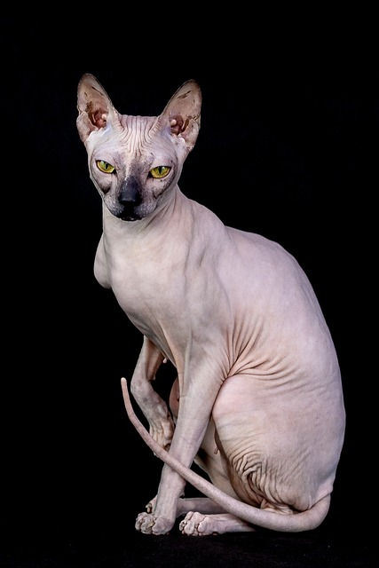

Cats are something everyone in the world knows about, and if you spend any time online you're likely to come across a funny cat video or picture. You may wonder where cats come from and why we find them to be so cute, and the answers to that are quite simple. According to the Smithsonian, cats were first domesticated 12,000 years ago around modern day Egypt, and were only really domesticated when we began to settle down as a species. Now, the reason why most people find cats cute is similar to why we find other animals like dogs and pands to be cute. They evolved in a way that made humans feel nurturing towards then. We tend to baby pets because in a way we see our pets in a similar way as we see babies, it comes from the nurturing side of humans.

Cats are very unique animals, and they have many little quirks and fun facts about them. According to the smithsonian, humans didnt actually domesticate cats but rather, cats domesticated themselves by inviting themselves into humans homes and adopting more "cute" traits to help them survive. The oldest cat ever recorded was Creme Puff, who lived an astounding 38 years and 3 days, in cat years that is 168 years! She was born in 1967 and passed in 2005. Cats have held government positions, including as a town Mayor (Stubbs, who was mayor of Talkeetna, Alaska.) and Chief Mouser to the Cabinet Office. Ship cats are also very common, with many cats serving abord both civilian and military vessels throughout history, with one named Simon being awarded the Dickins medal. Finally, the vast majority of cats you'll see are domestic short/long hair cats. Different breeds of cats are much more rare and depending on the breed can cost thousands of dollars. One example is a Savannah Cat, which depending on the type can cost upwards of an eyewatering $10,000 dollars.
© 2023 Beginners Guide to Cats